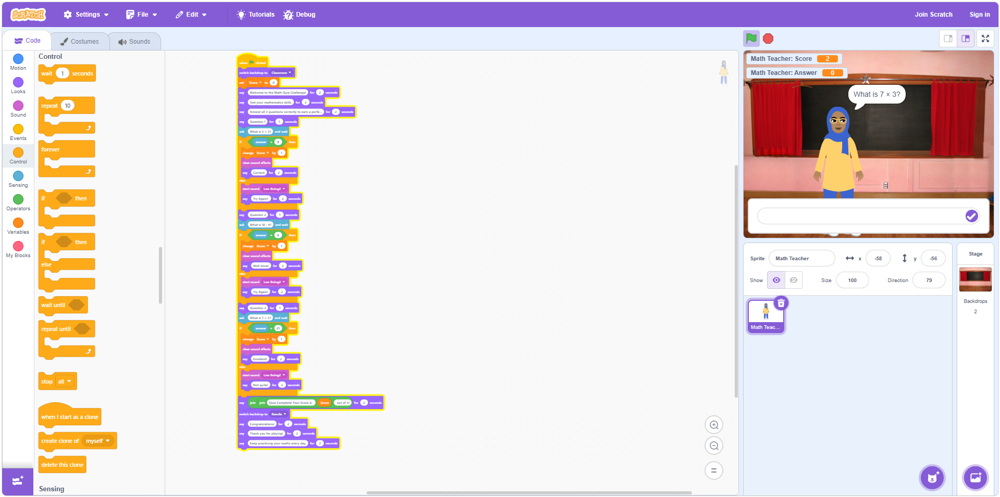

Project Overview
Introduced Scratch programming to learners in Lewa-supported schools as a playful, low-barrier entry point into coding and computational thinking. The centrepiece was "Math Quiz Challenge," an interactive educational game built in Scratch that turned maths practice into something learners wanted to play.
By starting with block-based coding and a tangible, fun outcome, the project helped young learners see themselves as creators of technology rather than just consumers of it.
Key Responsibilities
- Designed and delivered Scratch-based coding lessons for beginners.
- Built "Math Quiz Challenge," an interactive Scratch educational game.
- Taught block-based coding fundamentals: loops, conditions, variables, and events.
- Guided learners to design, build, and share their own Scratch projects.
- Used game-building to strengthen logic, sequencing, and problem-solving.
- Showcased learner projects to build confidence and celebrate progress.
Key Focus: Making coding approachable and joyful so young learners discover they can build, not just use, technology.
Tools & Technologies Used
Scratch
Offline Scratch Editor
Projectors & Displays
Google Workspace Tools
Impact & Outcomes
- Learners produced working interactive games of their own design.
- Programming became approachable, demystifying code for beginners.
- Strengthened logical thinking, creativity, and persistence.
- Sparked early interest in STEM and computing pathways.
Project Evidence
